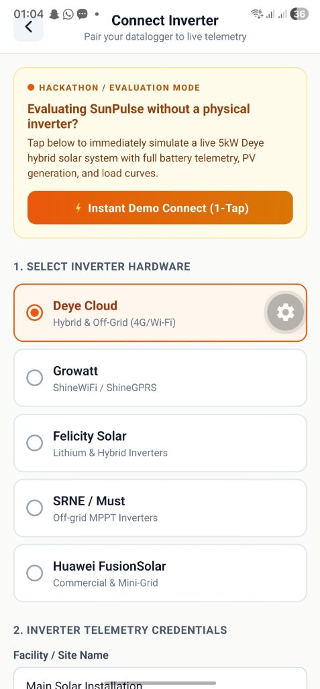

Across Nigeria and sub-Saharan Africa, over 40% of rural and peri-urban solar installations fail within 6 to 18 months. In rural healthcare clinics (PHCs), schools, community water boreholes, and off-grid small businesses, billions of naira invested in clean energy turn into "solar graveyards."
The root causes are not destroyed panels, but lack of post-installation telemetry, connectivity blackouts that disable traditional cloud IoT apps, and an absence of field technician accountability. When an inverter trips or a battery cut-off is misconfigured, owners revert to expensive petrol generators.
SunPulse resolves this with an offline-first mobile telemetry platform that pairs directly with inverters (Deye, Growatt, Felicity, SRNE, Huawei), monitors live solar generation and battery health, operates seamlessly through cellular blackouts, and coordinates verified field technicians with tamper-proof digital sign-offs.
Built with React Native (Expo SDK 58) and TypeScript. Cross-platform support for Android (optimized for entry-level devices Android 8+) and iOS. Features strict type safety with zero compilation or lint errors.
Incorporates an optimistic mutation queue backed by @react-native-async-storage. When connectivity drops, full inspection, diagnostic, and sign-off routines function offline and sync upon reconnecting to 2G/3G/4G.
Powered by Supabase (PostgreSQL) with Row Level Security (RLS) policies, Realtime data subscriptions, and structured tables for equipment telemetry, ticket queues, client systems, and maintenance records.
Communicates with inverter dataloggers via RS485/Modbus RTU protocols and vendor developer APIs (Deye Cloud, ShineWiFi, RS485 dongles). Supports datalogger barcode pairing.
| Table Name | Key Fields | Functional Role |
|---|---|---|
solar_systems |
id, user_id, site_name, inverter_model, datalogger_sn, capacity_kva, battery_kwh |
Stores the digital System Passport and equipment metadata for each installation. |
telemetry_logs |
id, system_id, pv_watts, grid_watts, battery_soc, battery_voltage, created_at |
Stores high-resolution timeseries telemetry for generation and consumption curves. |
maintenance_tickets |
id, system_id, problem, urgency, status, engineer_id, checklist_completed |
Dispatches service tickets and tracks SLA resolution timelines for field engineers. |
engineer_sync_queue |
id, engineer_id, sync_type, payload, status, client_timestamp, synced_at |
Maintains local offline-queued visits and signs until network coverage is restored. |
Users pair their physical datalogger serial number via barcode scanner or direct input. Includes an instant 1-Tap Evaluation Mode that dynamically simulates a live 5kW Deye hybrid installation with battery and PV curves for testing.
Continuous monitoring of solar generation (W), battery State of Charge (SoC %), and grid fallback. Displays estimated daily savings in Naira (₦) and switches gracefully to ClientHomeOfflineScreen when connectivity drops.
Provides an unforgeable digital certificate for every site, locking down inverter serials, battery chemistry, and warranty dates to eliminate rogue parts swapping.
Guided diagnostic routines, inverter voltage tests, geo-tagged site photos, and client digital signature sign-offs for transparent field accountability.

Deploy across 15 pilot sites in Kaduna (Primary Healthcare Centres, community water boreholes, and small businesses in Giwa, Kudan, and Barnawa) to stress-test real telemetry across 4G, 2G, and offline modes.
Implement an SMS fallback gateway so rural clinic heads receive critical battery shutdown alerts even when mobile data is turned off.
Partner with regional technical colleges and solar associations to verify 30 local solar technicians equipped with SunPulse digital work orders.
Open API integrations with Nigerian Rural Electrification Agency (REA) mini-grid operators for fleet-level health monitoring.